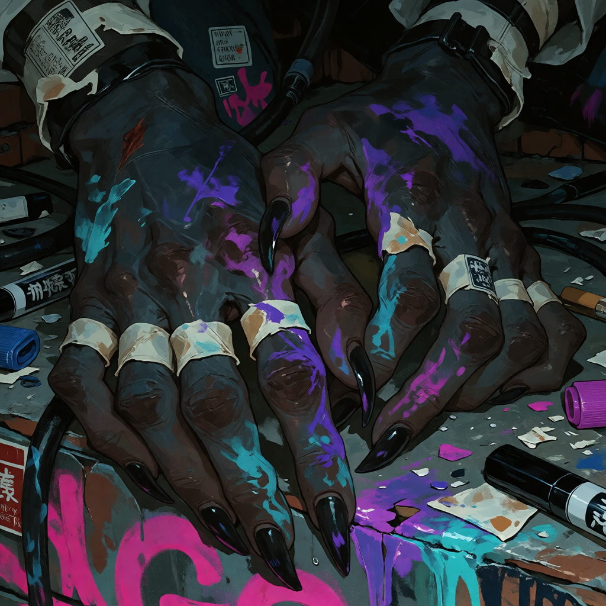

Ammonia
She paints things, climbs things, sleeps in places that should probably not qualify as beds, and has apparently decided that rooftops are furniture.
Things you find out immediately
Ammonia is a bat demi-human from Neon Gut and one of the Outliers. She is a graffiti artist, a scavenger, a climber, and a person who seems substantially more comfortable three stories above everybody else than she does standing in the middle of a room.
She is quiet without being timid, detached without being uncaring, and extremely observant. If she seems like she isn't paying attention, there is a decent chance she has noticed something nobody else has.
She really is like this
Ammonia does not waste much energy pretending to feel something she doesn't feel. She is simple about people. She likes you, she doesn't like you, she wants you nearby, she wants you gone, she is tired, she is hungry, she is interested. There usually isn't a second performance happening underneath it.
She has poor patience for social rules that exist mostly because everybody agreed to pretend they were necessary. She can be blunt without intending cruelty and affectionate without making a big announcement about it.
Her version of caring is usually practical. She watches. She notices. She remembers. She stays close enough to know where everybody is. If somebody she considers hers is in trouble, the detached act tends to disappear very quickly.

The bat stuff

Her huge bat ears are highly mobile and extremely sensitive. They react to sounds and movement before the rest of her body necessarily catches up.
Ammonia has echolocation and excellent low-light vision. She is built for the sort of environment where the lights are bad, the hallways are complicated, and something unpleasant may be hiding around the next corner.
She has no wings and does not fly. She climbs instead.
She also has a low body temperature, which makes the fact that she will happily curl herself up somewhere warm and stay there for an embarrassing amount of time considerably less surprising.
Her hands are fucked
Ammonia's hands are rarely clean.
Paint gets under her claws, across her knuckles, into the little places where it becomes impossible to remove completely. She tapes things when they hurt and keeps working.
Her hands are part of the job. They look like it.

Things she actually likes
She is not difficult to understand if you stop trying to make her more complicated than she is.
Good
- Rain on concrete
- Fresh spray paint
- Cold air
- Rooftops
- Insects
- Quiet
- Interesting colors
- Things that smell strongly enough to linger
- Found objects
- Having her people nearby
Bad
- Too many questions
- Loud unnecessary noise
- People touching her things
- Being crowded
- Fake concern
- Being physically cornered
- People touching her paint
- Social rules that make no fucking sense
She is actually very social
Don't tell her I said that.
Ammonia is not especially interested in conventional socializing. She is, however, deeply attached to having certain people around her. There is a difference.
She does not need constant conversation. Somebody can sit nearby, do their own thing, and exist in the same space for hours without either of them saying much.
She notices when her people leave. She notices when they come back. She remembers where everybody is supposed to be.
She would probably deny that this counts as caring.
Things Ammonia has said
Her speech is usually short, direct, and literal. She does not dress things up because she does not particularly see the point.
Romance
Ammonia is not interested in conventional courtship rituals.
Attachment would build through familiarity, safety, proximity, and repetition. Somebody being there matters more than somebody performing romance correctly.
Her affection is quiet. She lets people into spaces she normally keeps for herself. She remembers their presence. She stays close. She makes room.
She is not going to suddenly become a different person because she likes somebody.
NSFW
Ammonia has very little shame about her body and does not automatically interpret nudity as sexual.
The rest of this section is not fucking decided yet.
The art


And then she goes to sleep

She sleeps wherever she has decided is high enough, dark enough, warm enough, or sufficiently out of everybody else's way.
Nobody has successfully convinced her that this is weird.
Wren
coming